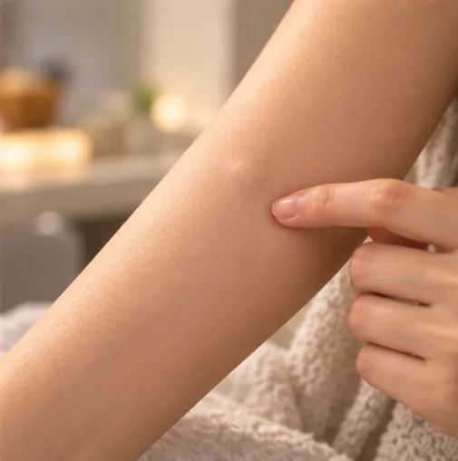

Tag kulit (fibroma lembut)
Lipatan kulit kecil yang lembut dan tergantung pada permukaan, biasanya tidak berbahaya dan selalunya di lipatan kulit
Apa itu
Tag kulit ialah lipatan kulit kecil yang lembut, sewarna kulit atau sedikit lebih gelap, biasanya bertangkai nipis, tumbuh di tempat kulit bergesel; ia biasa dan tidak berjangkit.
- Lipatan kulit: leher, ketiak
- Biasa pada dewasa
- Lembut, biasanya tidak sakit
- Jumpa doktor
- Doktor keluarga atau pakar kulit (dermatologi)
- Biasa pada
- Ramai dewasa; lebih kerap dengan usia, berat badan berlebihan, diabetes atau kehamilan
- Berjangkit
- Tidak
- Perjalanan
- Biasanya kekal di tempatnya, dan lebih banyak mungkin muncul dari semasa ke semasa
Tanda biasa
- Lipatan kulit kecil yang lembut, sewarna kulit atau sedikit lebih gelap
- Selalunya tergantung pada tangkai nipis, atau kelihatan seperti benjolan lembut kecil
- Selalunya di lipatan kulit: leher, ketiak, celah paha, kelopak mata atau bawah payudara
- Biasanya tidak sakit, tetapi boleh tersangkut pada pakaian, barang kemas atau pencukur
- Mungkin ada satu atau beberapa, dan bilangannya boleh bertambah perlahan-lahan
Mengapa ia berlaku
Peningkatan usiaPenuaan 
Berat badan berlebihanBerat badan berlebihan KehamilanPerubahan berkaitan kehamilan 
Diwarisi dalam keluargaKecenderungan genetik
Punca lain
- Kulit bergesel dengan kulit, pakaian atau barang kemas
Jumpa doktor dahulu jika
- Pendarahan yang tidak berhenti selepas ditekan kuat beberapa minit: ke hospital segera
- Tag yang bertukar ungu gelap atau hitam, atau menjadi sangat sakit: jumpa doktor secepat mungkin
- Tumbuhan yang cepat berubah, berdarah, bertepi tidak sekata, berbilang warna, atau tidak serupa dengan yang lain: jumpa doktor
- Kulit di sekelilingnya merah, panas, bengkak atau berair: jumpa doktor
- Banyak tag baharu, atau sangat dahaga, letih dan kerap kencing: minta doktor periksa gula darah anda
Jika mana-mana berkenaan, sila jumpa doktor sebelum sesi.
Halaman ini ialah maklumat am. Sila terus mengambil ubat biasa anda dan terus berjumpa doktor.
Teruskan mengambil ubat biasa anda dan terus berjumpa doktor. Sesi kami ialah sokongan lembut dan tidak menggantikan rawatan perubatan.
Menjaga diri

Kekalkan berat badan sihatPengurusan berat badan
Lebih banyak cara menjaga diri
- Biarkan sahaja; jangan potong, ikat, bakar atau tarik di rumah kerana boleh menyebabkan pendarahan, jangkitan dan parut
- Jika ia bergesel atau mengganggu, tanya doktor tentang cara selamat untuk membuangnya
- Pastikan lipatan kulit bersih dan kering, dan pakai pakaian yang longgar dan lembut
- Jika ada banyak, tanya doktor tentang pemeriksaan gula darah
Beritahu ahli terapi anda
- Kulit luka, merah atau sakit
- Diabetes atau deria kulit berkurang
- Ubat pencair darah
- Kehamilan
- Perentak jantung atau implan logam
Ahli terapi anda akan menyemaknya bersama anda sebelum bermula.
Keadaan berkaitan
- Vitiligo
- Vitiligo (sopak)
- Albinisme
- Pitiriasis alba (tompok pucat bersisik)
- Dermatitis seboroik (ruam jenis kelemumur)
- Piebaldisme
- Ruam makulopapular
- Keguguran rambut bertompok (alopesia areata)
- Gangguan menarik rambut (trikotilomania)
- Tifus
- Purpura fulminans
- Keratolisis eksfoliativa (tapak tangan/kaki mengelupas)
Rujukan: General information based on public health sources such as Mayo Clinic, NHS, Cleveland Clinic and NCBI StatPearls.
Halaman dikemas kini: 2026-10-31